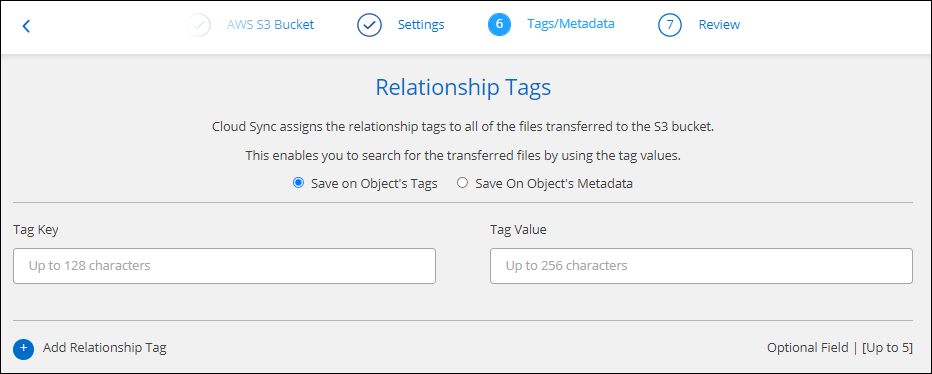

要求變更文件
要求變更文件 編輯此頁面
編輯此頁面 瞭解如何作出貢獻
瞭解如何作出貢獻建立同步關係
當您建立同步關係時、 Cloud Sync SyndService 會將檔案從來源複製到目標。初始複本之後、服務會每 24 小時同步所有變更的資料。
在建立某些類型的同步關係之前、您首先需要在Cloud Manager中建立工作環境。
針對特定類型的工作環境建立同步關係
如果您想為下列任一項目建立同步關係、則首先需要建立或探索工作環境：
-
Amazon FSX for ONTAP Sf
-
Azure NetApp Files
-
Cloud Volumes ONTAP
-
內部 ONTAP 部署的叢集
-
建立或探索工作環境。
-
按一下 * Canvas* 。
-
選取符合上述任一類型的工作環境。
-
選取同步旁邊的動作功能表。

-
選擇*從此位置同步資料*或*同步資料至此位置*、然後依照提示設定同步關係。
建立其他類型的同步關係
請使用這些步驟、將資料同步至或從Amazon FSX以外的支援儲存類型、以利ONTAP 進行支援的資料、以利進行邊、Azure NetApp Files 邊、Cloud Volumes ONTAP 邊、邊ONTAP 等的資料叢集。下列步驟提供範例、說明如何設定從 NFS 伺服器到 S3 儲存區的同步關係。
-
在 Cloud Manager 中、按一下 * Sync* 。
-
在「 * 定義同步關係 * 」頁面上、選擇來源和目標。
下列步驟提供範例、說明如何從 NFS 伺服器建立至 S3 儲存區的同步關係。

-
在「 * NFS 伺服器 * 」頁面上、輸入您要同步到 AWS 的 NFS 伺服器 IP 位址或完整網域名稱。
-
在*資料代理人群組*頁面上、依照提示在AWS、Azure或Google Cloud Platform中建立資料代理人虛擬機器、或是在現有的Linux主機上安裝資料代理人軟體。
如需詳細資料、請參閱下列頁面：
-
安裝資料代理程式之後、按一下 * 繼續 * 。

-
[[FIL篩選 器 ] 在 * 目錄 * 頁面上、選取最上層目錄或子目錄。
如果 Cloud Sync 無法擷取匯出、請按一下 * 手動新增匯出 * 、然後輸入 NFS 匯出的名稱。

如果您想要同步 NFS 伺服器上的多個目錄、則必須在完成之後建立其他同步關係。 -
在「 * AWS S3 Bucket * 」頁面上、選取一個儲存區：
-
向下切入以選取儲存區內現有的資料夾、或選取您在儲存區內建立的新資料夾。
-
按一下 * 「 Add to the list* （新增至清單 * ）」以選取與 AWS 帳戶無關的 S3 儲存區。 "必須將特定權限套用至 S3 儲存區"。
-
-
在 * 庫位設定 * 頁面上、設定庫位：
-
選擇是否啟用 S3 儲存區加密、然後選取 AWS KMS 金鑰、輸入 KMS 金鑰的 ARN 、或選取 AES-256 加密。
-
選取 S3 儲存類別。 "檢視支援的儲存類別"。

-
-
[[Settings]在*設定*頁面上、定義如何在目標位置同步及維護來源檔案與資料夾：
- 排程
-
選擇週期性排程以供未來同步或關閉同步排程。您可以排程關係、每 1 分鐘同步一次資料。
- 同步逾時
-
定義Cloud Sync 如果同步尚未在指定的時數或天數內完成、則是否應取消資料同步。
- 通知
-
可讓您選擇是否要在Cloud Sync Cloud Manager的通知中心接收功能不全的通知。您可以啟用通知、以便成功同步資料、同步失敗資料及取消資料同步。
- 重試次數
-
定義 Cloud Sync 在跳過檔案之前、應重試同步檔案的次數。
- 持續同步
-
初始資料同步之後Cloud Sync 、Syncset會偵聽來源S3儲存區的變更、並在目標發生時持續同步任何變更。不需要以排定的時間間隔重新掃描來源。
此設定僅適用於建立同步關係、以及當您從S3儲存區同步至S3、Google Cloud Storage、Azure Blob儲存設備、StorageGRID 更新版本或IBM Storage時。
如果啟用此設定、則會影響其他功能、如下所示：
-
同步排程已停用。
-
下列設定會還原為預設值：同步逾時、最近修改的檔案及修改日期。
-
依大小篩選只會在複本事件上作用（而非刪除事件）。
-
建立關係之後、您只能加速或刪除關係。您無法中止同步、修改設定或檢視報告。
-
- 比較依據
-
選擇Cloud Sync 當判斷檔案或目錄是否已變更且應重新同步時、是否應比較某些屬性。
即使您取消核取這些屬性、Cloud Sync 透過檢查路徑、檔案大小和檔案名稱、即可將來源與目標進行比較。如果有任何變更、就會同步這些檔案和目錄。
您可以選擇啟用或停用Cloud Sync 下列屬性之比較功能：
-
* mtime*：檔案的上次修改時間。此屬性對目錄無效。
-
* uid*、* gid*和* mode*：Linux的權限旗標。
-
- 物件複本
-
啟用此選項可複製物件儲存中繼資料和標記。如果使用者變更來源上的中繼資料、Cloud Sync 則下次同步時、會將此物件複製下來、但如果使用者變更來源上的標記（而非資料本身）、Cloud Sync 則下次同步時、不會複製物件。
建立關聯之後、您無法編輯此選項。
支援複製標記的同步關係包括Azure Blob或S3相容端點（S3、StorageGRID 支援、或IBM Cloud Object Storage）作為目標。
下列任一端點之間的「雲端對雲端」關係均支援複製中繼資料：
-
AWS S3
-
Azure Blob
-
Google Cloud Storage
-
IBM Cloud 物件儲存設備
-
StorageGRID
-
- 最近修改的檔案
-
選擇排除最近在排程同步之前修改的檔案。
- 刪除來源上的檔案
-
選擇在將檔案複製到目標位置後、從來源位置刪除檔案 Cloud Sync 。此選項包括資料遺失的風險、因為來源檔案在複製後會被刪除。
如果啟用此選項、您也需要變更資料代理程式上 local.json 檔案中的參數。開啟檔案並更新如下：
{ "workers":{ "transferrer":{ "delete-on-source": true } } } - 刪除目標上的檔案
-
如果檔案已從來源中刪除、請選擇從目標位置刪除。預設值是永遠不要從目標位置刪除檔案。
- 檔案類型
-
定義要包含在每個同步中的檔案類型：檔案、目錄和符號連結。
- 排除檔案副檔名
-
輸入副檔名並按 * Enter * 鍵、指定要從同步中排除的副檔名。例如、輸入 log 或 .log 以排除 * 。 log 檔案。多個副檔名不需要分隔符號。以下影片提供簡短示範：
- 檔案大小
-
無論檔案大小為何、或只是特定大小範圍內的檔案、都可以選擇同步所有檔案。
- 修改日期
-
無論檔案上次修改日期、在特定日期之後修改的檔案、在特定日期之前修改的檔案、或是在某個時間範圍之間、都要選擇所有檔案。
- 建立日期
-
當SMB伺服器為來源時、此設定可讓您同步處理在特定日期之後、特定日期之前或特定時間範圍之間建立的檔案。
- ACL -存取控制清單
-
在建立關聯或建立關聯之後、啟用設定、即可從SMB伺服器複製ACL。
-
在「標記/中繼資料」頁面上、選擇是否要將金鑰值配對另存為標記、以便傳輸至S3儲存區的所有檔案、或是在所有檔案上指派中繼資料金鑰值配對。


將資料同步至StorageGRID 物件儲存設備時、也可使用此功能。對於Azure和Google Cloud Storage、只有中繼資料選項可用。 -
檢閱同步關係的詳細資料、然後按一下 * 建立關係 * 。
-
結果 *
-
從來源與目標之間開始同步資料。 Cloud Sync
從Cloud Data Sense建立同步關係
支援與Cloud Data Sense整合。Cloud Sync從Data感應範圍內、您可以使用Cloud Sync 下列功能、選取您要同步到目標位置的來源檔案：
從Cloud Data Sense啟動資料同步之後、所有來源資訊都會包含在單一步驟中、而且只需要輸入一些重要詳細資料即可。然後選擇新同步關係的目標位置。